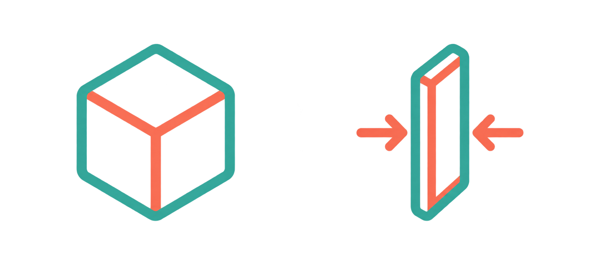
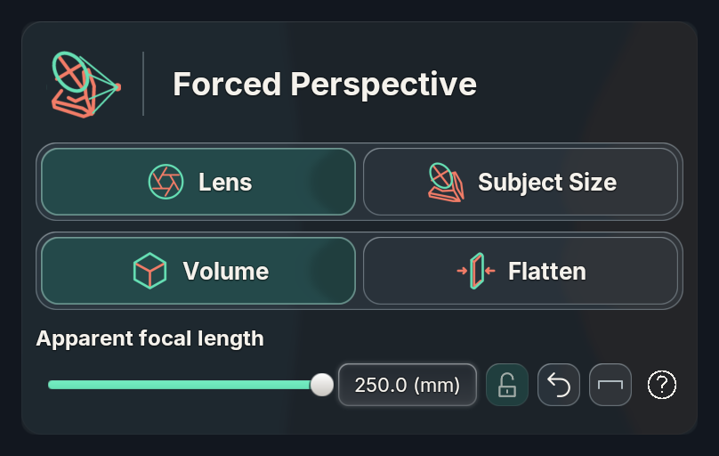
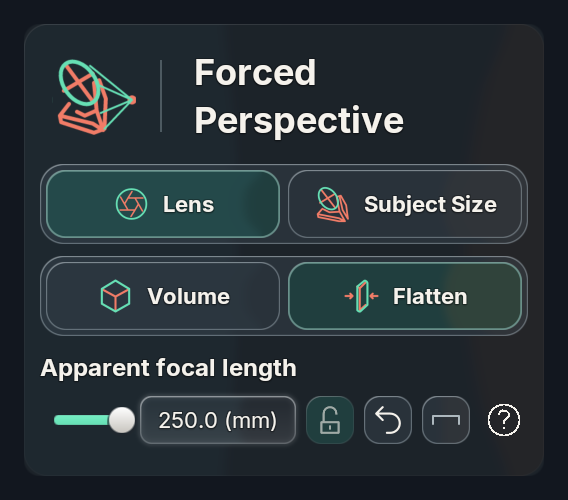
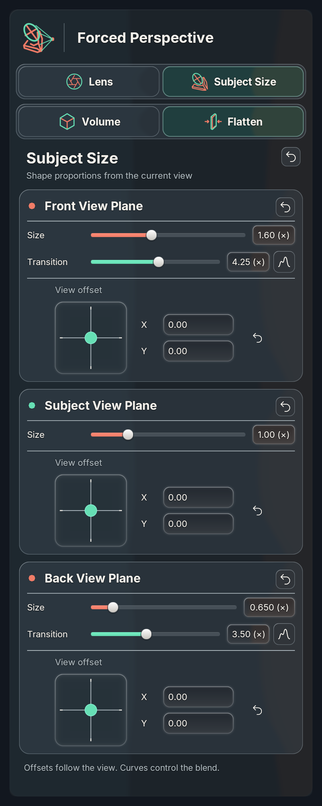
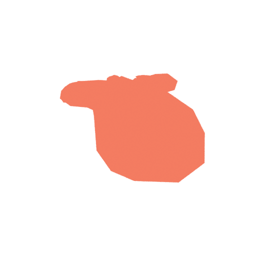

Volume remains the default. Flatten is an opt-in depth treatment for Lens and Subject Size, beneath their tabs in both the wizard and full controls. Short lenses are unchanged.

The SVG paths follow this generated reference. Both layers use the add-on's configured accent colors.



These are actual Cycles CPU diagnostic emission renders, not concept images. The paired front renders are pixel-identical in both tested modes. Side views expose the reduced depth. Arbitrary lighting, curvature, raycasts and scene occlusion are not expected to remain identical.

Eight macOS Blender builds, 4.0.2–5.2.2: 168 numerical cases per build, eight unchanged Volume baselines each. 4.2/5.2 native RNA, translated labels, context menus, narrow/wide layouts and schema migration passed. All Might: 13 objects, 28 mode/orbit/billboard combinations, maximum projected error 0.052 pixels at 1000px focal scale.
Paired SSH verification on Tyler-Laptop passed geometry on Windows Blender 4.1.1, 4.3.0, 4.4.3, 4.5.4, 5.0.1 and 5.2.2; native controls/migration and billboard checks passed on 4.4/5.2, and the native bridge on 5.2. The exploratory 4.1 loader still rejects versioning-added nodes in both old and new graphs; its numerical pass is not full integration acceptance. Windows results and limitations. Physical Vulkan/OpenGL windowed replay remains open. The 5,001-vertex fixture measures node evaluation, not whole-scene FPS. No new motion GIF.